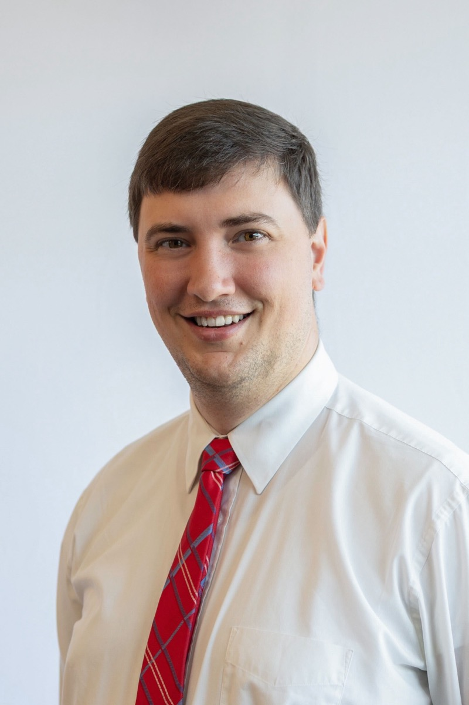

Adam Ure
Software Engineer for Connected Devices · Atlanta metro area, Georgia
I help hardware teams ship software that pairs reliably, syncs accurately and updates safely. I got into software because I love building things people depend on, and connected devices are where that matters most: when an app talks to hardware, “it works on my machine” isn’t good enough.
Over the past six years I’ve led mobile and platform work for connected products, from consumer devices to a regulated medical device platform. I co-invented a patented multi-tier Bluetooth security framework for mobile-to-device communication, led compliance-critical features for a regulated medical device platform, and built a localization and audit pipeline that cut verification time by about 99.8%. Today I’m the founding engineer at Snifr, building a Wi-Fi-connected e-nose for gut health tracking that’s now in beta.
I build quality in rather than bolting it on afterward: test-driven development, clean architecture and CI/CD quality gates that let teams ship on a cadence they can plan around. I hold an M.S. in Software Development and a B.S. in Computer Science, and I mentor engineers who want to grow. Away from the keyboard I’m a dad of three, a singer and a lifelong student of Mandarin.
Experience, education & skills

Read the resume as text
Core strengths
- Device connectivity & security: Bluetooth LE, Wi-Fi devices, secure device communication, sync and firmware-boundary reviews
- Regulated software: Compliance-critical delivery under medical device controls
- Platforms: Swift, SwiftUI, UIKit, Kotlin Multiplatform, Android, Flutter, REST, GraphQL, server-side Swift (Vapor) and Python on AWS
- Engineering quality: TDD, clean architecture, TCA, CI/CD quality gates, predictable releases
- Leadership: Technical direction, cross-functional execution and mentorship
- AI-accelerated delivery: Claude Certified Architect – Foundations
Experience
Founding Engineer, Snifr (October 2025 – Present)
- Build the software for a Wi-Fi-connected e-nose for gut health tracking, now in beta: device connectivity, apps, backend and AI insights.
- Ship cross-platform apps with Kotlin Multiplatform on an AWS backend, with server-side Swift services and Python machine learning.
Principal Software Engineer, Stable Kernel (June 2025 – Present)
- Lead technical direction for a greenfield native platform in Swift and SwiftUI, owning architecture, execution and quality standards.
- Defined clean architecture patterns, CI/CD quality gates and automated testing strategies that improved delivery consistency and onboarding.
- Guide engineers through architectural decisions, tradeoffs and delivery planning; partner with product, design and backend teams.
Engineering Team Lead, Nevro Corp (January 2023 – May 2025)
- Led delivery of compliance-critical mobile features for a regulated medical device platform, shipping releases predictably and at quality.
- Architected a multilingual localization and audit pipeline that reduced verification time by ~99.8%.
- Served as independent reviewer on firmware projects, ensuring regulatory adherence across the device and software boundary.
- Acted as execution lead, coordinating priorities and dependencies with product, QA and regulatory stakeholders.
Lead Mobile Developer, Myia Health (March 2022 – January 2023)
- Architected and unified iOS, Android and Flutter platforms for remote patient care, with consistent patterns for reliability and scale.
- Defined CI/CD and TDD workflows that reduced post-release defects by ~15%.
- Delivered telemedicine platform components and mentored engineers in clean architecture and SOLID principles.
Lead iOS Developer, Nike Valiant Labs (November 2021 – March 2022)
- Architected workout and run-tracking features with modular, high-performance UIKit components.
- Designed the GraphQL data layer with backend engineers, covering schema design, query optimization and error handling.
Mobile Experience Architect, Monovo (March 2020 – November 2021)
- Co-invented a multi-tier Bluetooth cybersecurity framework securing mobile-to-device communication (U.S. Patent No. 12,652,273).
- Built the iOS app from scratch and set mobile architecture across iOS and Android; expanded scope to lead backend and web teams.
Education & certifications
- M.S. Software Development, Maryville University (December 2023)
- B.S. Computer Science, Brigham Young University (April 2020)
- Claude Certified Architect – Foundations, Anthropic